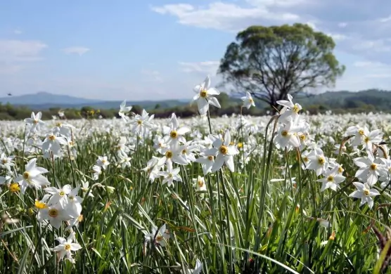
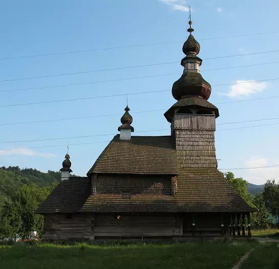

«Закарпатське адажіо»

Характеристика:
Маршрут:
Свалява - Довге - Іза - Мукачево - Хуст.
Довжина:
161 км.
Тривалість:
2 дні.
Складність:
підійде як для новачків, так і для більш досвідчених велотуристів.

Опис:
Цей маршрут дарує можливість
насолодитися неймовірною
красою
закарпатської природи. Він
включає
відвідування Долини нарцисів, місто мінеральних джерел Сваляву, село Довге, де розташована
церква у стилі модерн і село Іза. Дорогою можна покупатися в гірській річці Боржава. На
другий
день ви опинитеся в Мукачево, де зможете подивитися місцеві визначні пам'ятки: ратушу, собори
й
замки.
Кінцева точка – село Хуст, яке славиться своєю дерев'яною архітектурою.

Свалява
Сваля́ва — місто в Мукачівському районі Закарпатській області України.
Цікаві місця: У колишньому присілку Бистрий (нині — вулиця Бистрянська)
збереглася церква Архистратига
Михайла (1588, 1759) — шедевр української дерев'яної архітектури. Це досконалий зразок так
званого лемківського стилю. Силует церкви формує масивна вежа з розвиненим бароковим
завершенням, і два маленькі навершя над гребенем дахів нави і вівтаря.
Довге
До́вге — село в Україні, в Хустському районі Закарпатської області, центр Довжанської
сільської громади.
Цікаві місця: На братській могилі загиблих повстанців у 1903 року на кошти
жителів Довгого та прилеглих сіл
було споруджено пам'ятник на честь 200-ліття пам'ятної битви. На ступінчастій гранітній
основі підноситься розвинений п'єдестал з білого мармуру, обрамлений з боків волютами й
увінчаний колоною доричного ордеру. Колона, увінчана бронзовим турулом. Висота пам'ятника 3
метри.
Іза
І́за — село в Хустській міській громаді у Закарпатській області в Україні. Розташоване між
двома гірськими пасмами, на лівому березі ріки.
Цікаві місця:
● два курганних могильника рубежу нової ери та III—IV століть н. е., досліджені на її околиці. Перша група курганів — праворуч від дороги іза — Липча, друга — напівнічний схід, ближче до села. Досліджено похованя культури карпатських курганів І — ІV століть нашої ери.
● храм св. Миколи Чудотворця. Початок 1920-х.
● чоловічий Свято-Миколаївський монастир
● храм св. Миколи Чудотворця. Початок 1920-х.
● храм Успіння пр. богородиці. 1901.
● центр лозоплетіння
● єдина в Україні ферма з розведення плямистих манчжурських оленів, яка постачає сировину для виробництва пантокрину
● два курганних могильника рубежу нової ери та III—IV століть н. е., досліджені на її околиці. Перша група курганів — праворуч від дороги іза — Липча, друга — напівнічний схід, ближче до села. Досліджено похованя культури карпатських курганів І — ІV століть нашої ери.
● храм св. Миколи Чудотворця. Початок 1920-х.
● чоловічий Свято-Миколаївський монастир
● храм св. Миколи Чудотворця. Початок 1920-х.
● храм Успіння пр. богородиці. 1901.
● центр лозоплетіння
● єдина в Україні ферма з розведення плямистих манчжурських оленів, яка постачає сировину для виробництва пантокрину
Мукачево
Мука́чево (до 2017 року — Мука́чеве) — місто в Закарпатській області України, центр
Мукачівської міської громади та Мукачівського району.
Цікаві місця: Місто має високий туристичний потенціал особливо в екскурсійному
напрямку, як для українських туристів, так і для іноземців. Українці люблять приїжджати сюди
для огляду Замку «Паланок», жіночого Свято-Миколаївського монастиря, а також центру міста з
його вулицями вимощеними бруківкою і затишними кафе. Іноземні туристи (в основному угорці та
словаки) приїздять сюди для ознайомлення з історичними подіями, які мали місце в цьому
регіоні в розрізі історії їх країн.
Останні 3-4 роки в Мукачеві спостерігається сплеск розвитку подієвого туризму особливо коштом
фестивалю «Червене вино», чайного факультету на «Червоній горі» та іншим подіям.
Хуст
Хуст (угор. Huszt, словац. Chust, нім. Chust, рум. Hust, їд. חוסט) — місто в Закарпатській
області України, центр Хустської міської громади та Хустського району.
Цікаві місця:
● Хустський замок (12, 14, 16 ст.), руїни
● Хустська Реформатська церква (колишній Єлизаветинський костел 13 ст., готика, оборонного типу)
● Благовіщенська церква
● Католицький храм Святої Анни (18 ст., бароко)
● Синагога (Хуст) (18 ст.)
● Міні-скульптура солекопа в рамках туристичного маршруту «Соляний шлях Закарпаття». Розташована у центральному парку, поблизу річки Хустець.
● Хустський замок (12, 14, 16 ст.), руїни
● Хустська Реформатська церква (колишній Єлизаветинський костел 13 ст., готика, оборонного типу)
● Благовіщенська церква
● Католицький храм Святої Анни (18 ст., бароко)
● Синагога (Хуст) (18 ст.)
● Міні-скульптура солекопа в рамках туристичного маршруту «Соляний шлях Закарпаття». Розташована у центральному парку, поблизу річки Хустець.
Маршрут на мапі: